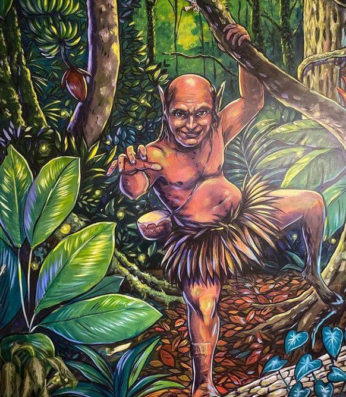

En lo más profundo de la selva amazónica peruana, donde la vegetación se vuelve impenetrable y el silencio parece tener vida, habita un espíritu que no se deja ver fácilmente, pero cuya presencia se siente como un escalofrío en la nuca: el Chullachaqui.
Para los pueblos indígenas, este ser no es solo una leyenda: es una advertencia viva. Se dice que el Chullachaqui tiene la inquietante habilidad de adoptar cualquier forma: puede parecer tu hermano, tu guía, incluso un animal familiar. Pero hay un detalle que lo traiciona: sus pies están invertidos, como si caminara hacia atrás en el tiempo, dejando huellas que confunden incluso al más experimentado viajero.

Su aparición no es inmediata. Primero, el silencio se vuelve denso, casi opresivo. Luego, susurros sin origen se filtran entre los árboles, como si la selva misma hablara. Risas que no pertenecen a ningún ser humano se mezclan con el crujir de ramas y el canto lejano de aves nocturnas. Y finalmente, una figura emerge desde la penumbra, con una mirada que no busca compañía… sino control.
Algunos aseguran haber sido atacados. Otros simplemente se perdieron sin explicación, como si la selva los hubiera tragado. Pero el Chullachaqui no es solo un ente de terror. Para muchos, es el guardián de la selva, el espíritu que castiga a quienes la profanan y protege lo que aún permanece puro. Su furia no es gratuita: es una respuesta a la arrogancia humana, a la falta de respeto por lo sagrado.

Se dice que aparece ante quienes cazan sin necesidad, talan árboles indiscriminadamente o se burlan de los rituales ancestrales. Su presencia es una advertencia: la selva no perdona la soberbia.
Esta leyenda, transmitida de generación en generación, no solo busca infundir miedo. Busca despertar conciencia. Porque en el corazón del Amazonas, la línea entre lo real y lo mítico es tan delgada como la neblina que se posa sobre las hojas al amanecer.
Y si alguna vez sientes que alguien te observa en la selva, aunque estés solo… tal vez no lo estés.
El Chullachaqui no solo engaña: enseña. No solo castiga: protege. Es la voz invisible de una selva que exige respeto.